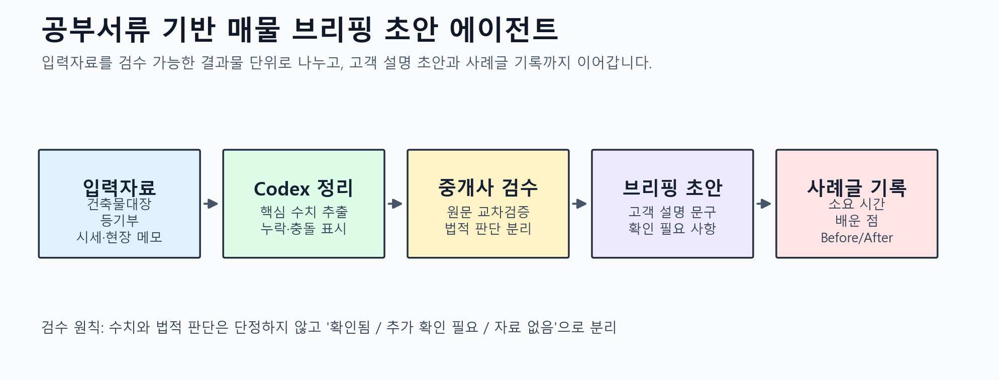

1순위 · 중개업무
공부서류 기반 매물 브리핑 초안
건축물대장, 등기부, 토지이용계획, 시세, 현장 메모를 정리해 고객 설명 초안과 내부 검수표를 만듭니다.
난이도
효과
사례로 좋은 이유
공인중개사 전문성이 드러나고, AI 결과를 검수표로 통제하는 흐름을 보여주기 좋습니다.
도시아재 GPTERS 23기 Codex App
첫주는 미니사례로 계획을 확정하고, 2~4주는 매주 수요일 전까지 실제 중개업무 자동화 사례를 1개 이상 준비해 발표 자료로 누적합니다.
중개실무 4개, 법원경매 3개, AI 교육 3개를 후보로 정리합니다.
반복성, 시간절감 가능성, 검수 안전성, 발표 적합성으로 비교합니다.
후보 중 매주 1개 이상을 골라 계획, 실천, 수정계획으로 기록합니다.
체크 상태와 주차 배치를 남겨 성장과 이행 과정을 보여줍니다.
| 일정 | 커리큘럼 핵심 | 대표님 대시보드 운영 | 상태 |
|---|---|---|---|
| 7/22 수 21:00 | Codex 앱 첫 사용, 기능 지도, 반복 업무 1개 선정 | 후보 10개 중 2~4주 실험 후보 선택, 현재 방식과 작업시간 기록 | 준비중 |
| 7/29 수 21:00 | Skill, Plugin, MCP로 Codex 확장 | 매물 브리핑 업무에 반복 지시서와 확장 도구 조합 적용 | 대기 |
| 8/5 수 21:00 | Browser Use, Computer Use, Record & Replay, App Shot | 경매 사건서류 확인과 화면 기반 반복 조작 흐름 1개 실험 | 대기 |
| 8/12 수 21:00 | 내 업무용 Codex 에이전트 시스템 설계 | AGENTS.md, 실행 프롬프트, 검수 기준, 최종 사례글과 발표자료 완성 | 대기 |
| 리스크 | 관리 기준 |
|---|---|
| 수치 오류 | 원문 공부서류와 단위 대조 |
| 법적 단정 | 확인됨, 추가 확인 필요, 자료 없음으로 분리 |
| 경매 권리검토 누락 | 매각물건명세서, 현황조사서, 감정평가서, 등기사항증명서를 교차확인하고 최종 판단은 별도 수행 |
| 민감정보 노출 | 사례글 공개 전 주소·소유자·연락처 비식별 처리 |
| AI 결과 과신 | 고객 설명 문구와 내부 검수 메모 분리 |
2~4주 실험 후보로 체크한 항목 수입니다.
매물 브리핑, 경매 사건서류 요약, AI 강의안 자동화 순서로 세 역할을 연결합니다.
후보별 회당 소요 시간은 대표님이 알려주시면 제출본에 반영합니다.
건축물대장, 등기부, 토지이용계획, 시세, 현장 메모를 정리해 고객 설명 초안과 내부 검수표를 만듭니다.
공인중개사 전문성이 드러나고, AI 결과를 검수표로 통제하는 흐름을 보여주기 좋습니다.
등기부등본, 건축물대장, 토지이용계획에서 확인됨, 추가 확인 필요, 자료 없음 항목을 분리합니다.
AI가 판단을 대신하지 않고 검수 전 단계를 구조화한다는 메시지를 분명하게 보여줍니다.
매물 특징을 광고 문구로 바꾸되 수익 보장, 권리 안전성 단정, 과장 표현을 별도로 표시합니다.
문구 생성뿐 아니라 위험 표현을 걸러내는 검수 기준까지 사례로 보여줄 수 있습니다.
상담 메모를 고객 요구사항, 추가 확인 자료, 다음 행동, 후속 메시지 초안으로 정리합니다.
짧고 자주 반복되는 업무라 시간 단축 효과를 실측하기 좋습니다.
매각물건명세서, 현황조사서, 감정평가서, 등기사항증명서의 핵심 사실과 서로 다른 내용을 분리합니다.
대표님의 경매 현장 경험과 Codex의 문서·화면 처리 기능을 함께 보여주기 좋습니다.
권리관계 검토 순서를 만들고 임차인, 점유, 인수 가능 권리와 추가 조사 필요 항목을 표시합니다.
AI의 결론이 아니라 조사 순서와 누락 방지 장치로 설계하는 안전한 활용법을 보여줍니다.
시세, 명도·수리비, 세금 등 가정값을 구분해 입찰가별 비용과 예상 손익 범위를 비교합니다.
계산 구조와 가정값이 보여 Before/After 측정과 강의 실습자료 전환이 쉽습니다.
실무 자동화 사례를 강의 목차, 설명 흐름, 실습 안내, 주의사항으로 재구성합니다.
공인중개사 실무 자동화 결과를 대표님의 강의 콘텐츠로 전환할 수 있습니다.
수강생이 따라 할 수 있는 입력 양식, 프롬프트, 결과 검수표를 패키지로 만듭니다.
스터디 결과물이 대표님의 다음 AI 중개실무 강의 자산으로 남습니다.
강의 후 질문을 유형별 FAQ, 보충 설명, 다음 강의 개선점으로 정리합니다.
강의 운영 반복 업무까지 자동화 대상으로 확장할 수 있습니다.
오늘은 GPTERS 23기 Week 2 사례로 공부서류 기반 매물 브리핑 자동화를 실행할게. 입력자료를 보고 고객 설명 초안, 내부 검수표, 추가 확인 필요 항목을 분리해서 만들어줘.

{kind=link}